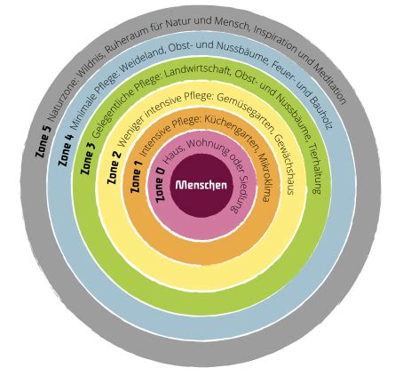
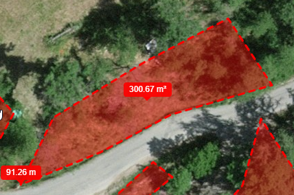
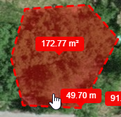
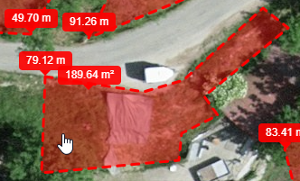
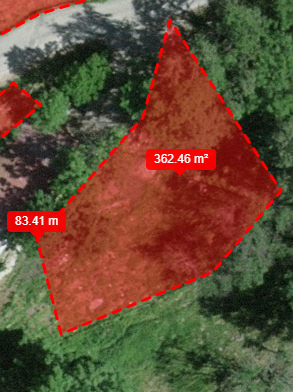
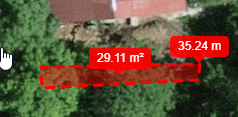

Bepflanzungskonzept
TODO: Diese Seite ersetzen durch ordner. Allgemeines Konzept und dann Detailkonzepte in eigener Datei
Abzudeckende Funktionen¶
Alle Pflanzen, die die aktiv gepflanzt werden oder die die nicht bekämpft werden, sollen direkt oder indirekt von Nutzen sein. Konkret bedeutet dies, Pflanzen zu pflanzen die nutzbare Funktionen erfüllen und Nutzen für die zu finden, die aus eigener Kraft entstehen.
Folgende Funktionen sollten integriert werden:
- Nahrungsmittelproduktion
- Brennholz und Bauholz Produktion
- Erzeugung von Biomasse als Nährstoff- und Wasserspeicher oder Mulch (Gründüngung)
- Anlocken von Bestäubern und Nützlingen
- Schädlingsabwehr
- Strukturbildung für hochwachsende Pflanzen (Kiwi, Reben) oder als lebende Strukturen(living fence)
- Stickstofffixierung oder sonstige, direkte Unterstützung von Nutzpflanzen.
- Erosionskontrolle oder künstlicher Strukturen
Viele Pflanzen können mehrere Funktionen übernehmen. Es gilt herauszufinden welche Kombination am besten funktioniert und sich mit wenig externen Massnahmen stabil verhält.
Ziel¶
In einem ersten Schritt soll die Bodenqualität sowie die Struktur verbessert werden. Zu diesem Zweck werden erst keine produktiven pflanzen verwendet. Mit Produktiv ist hier die direkte Nutzung für den menschen gemeint.
Somit kann der Boden in den ersten Phasen (1-2 Jahre?) vorbereitet werden. Bäume die später gesetzt werden sollen, können in Behältern vorgezogen oder später gekauft werden.
Aufteilung der Sektoren¶
Gesamtfläche: ~1060m²
Zusammen mit dem jetzigen Pächter wurde bestimmt, das in einigen Parzellen um die Haupthalle frei gepflanzt werden kann. Sein Betrieb wird dadurch nicht gestört. Die Nähe der Parzellen zur Halle macht diese sowieso interessant und reihen sie in die Sektoren 2 oder 3 der Permakultur-Sektoren ein.

Landschaftliche Veränderungen¶
Für jede Parzelle gibt es spezifisch Lösungen. Als Grundelemente sollen aber wie im Generalkonzept erläutert, die Elemente Sonne, Wasser & Erde dienen. Dementsprechend werden gemäss Tasks/Anfang Terrassierung etwa Swales gegraben oder Terrassen erstellt. Zusätzlich werden gemäss Anfang Bepflanzung erste Pflanzen gesetzt.
Aufteilung in Schichten¶
Todo: vertikale Schichten in eigenes Dok, verlinken hierher
Mycelium-Schicht¶
Knollen-Schicht¶
Boden-Schicht¶
Sträucher¶
Ranken¶
Mycelium-Schicht¶
Parzellen¶
Oberhalb der Strasse¶

Entwicklung von Konturlinien zu Terrassen. Terassirerung mit Stämmen und Steinen. Darin als Produktive Bäume primär Steinobst in Form von Gilden oder Konsorten wie z.B. (https://www.tenthacrefarm.com/how-to-build-a-fruit-tree-guild/ ). Direkte Wasserentnahme aus der Suone Wasserfassung.
Bevor die endgültige Bepflanzung vorgenommen wird, sollen Pflanzen zur Bodenverbesserung und Kompostherstellung gepflanzt werden (Gründüngung).
Auf den geschaffenen Konturen Produktive Bäume, primär Steinobst in Form von Gilden oder Konsorten wie z.B. (https://www.tenthacrefarm.com/how-to-build-a-fruit-tree-guild/ )
- Apfel
- Birne
- Mirabellen
- Zwetschgen
- Aprikose
Zwischen je zwei produktiven Bäumen soll eine unterstützende Spezies eingesetzt werden, die Gründüngung produziert sowie bei der Stickstofffixierung hilft.
- Paulownia ??
- Gleditschie, bestellen
- ~~Robinie~~
- Erle
Als Abgrenzung zur Seite, Pioniere und Unterstützer die den Hang stabilisieren und Mulch produzieren. Halten zudem Tierbefrass etwas fern.
Todo: Genaueres Konzept
- Besenginster (Wichtig: Besenginster != Ginster)
- Silberregen
Verteilt Wildblumen und Pereniale um den Boden zu decken
Beispiele: (Todo: genauere Bestimmung)
- Narzissen
- Knoblauch-Schnittlauch(Knolau) als Schutz for Pilzbefall und Unkraut
- Melisse
- Dill
- Beinwell
- Löwenzahn
- Schafgarbe
- Weißklee
- Hornklee
- Lupinen
Todo: Andere Schichten bestimmen
Oberhalb davon¶

Den schon jetzt erodierenden Hügel etwas abgraben und mit dem Material die Terrassen darunter auffüllen. Anstelle kommen Beeren, Hasel oder andere Sträucher.
- Beeren
- Haselnuss
Die beiden Flächen oberhalb der Strasse sollten recht einfach hydrologisch verbunden werden können, sodass eine gemeinsame Bewässerung möglich ist. (Siehe Bewässerungskonzept)
Unterhalb der Strasse¶

Todo: Konzept für diesen Bereich
? Keine grossen Arbeiten nötig ?
? Inseln für jeweilige Bäume?
noch unklar was am sinnvollsten ist. Eine Reihe von Sträuchern (Hasel) Zur Abschottung nach Links
Unterhalb der Halle¶

Ebenfalls Terrassieren oder Inseln. Dieser Standort würde sich als Garten eignen. evtl. ein Gewächshaus, evtl. Hybrid Hydroponics
- Hopfen an der Halle hoch
Evtl. Einsatz von Hochbeeten, Hydroponics oder Hybrid Hydroponics um Gemüse anzubauen.
An der untersten Mauer¶
Hier gelangt besonders nährstoffreiches Wasser aus den Misthöfen.
Was kann daraus werden?

- Reben?
- Kräuter?
Unterstützende Pflanzen¶
Verteilt einige Paulownia Bäume. Sind zwar invasiv aber wachsen extrem schnell. Sie produzieren Biomasse und binden gut Stickstoff. Werden sie nach einigen jahren gefällt besteht keine gefahr einer unkontrolierten Verbreitung. Die schnell wachsenden Bäume können eingesetzt werden um Terrassen zu sichern bz. aufzubauen.
Nach dem Selben Prinzip
- Robinien
- Ginster
- Todo: weitere
Alternativen dazu
Unterstützende Strukturen¶
Nebst Pflanzen können auch Strukturen hilfreiche Funktionen übernehmen. Durch strukturelle Eingriffe können bewusst Grenzen zwischen Kleinst-Ökosystemen gezogen werden. Dies Grenzen bilden oft Hotspot der Diversität und vereinen viele Funktionen auf kleiner Fläche.
- Steinmauern
- Steinhaufen
- Swales
- Teiche
- Netze
- Zäune
- Hochbeete
- Steinspiralen
- Vogelhäuser
- Fog catchers
Verwertung der Biomasse¶
Dort wo jetzt die Anhänger stehen einen Wurm-Kompost starten und Schnitzel, Abschnitte und Unkraut wie Nesseln kompostieren/fermentieren. Durch Hinzufügen von Mist sollte nährafter Kompost entstehen. Abgeschwemmte Nährstoffe fliessen durch die Lage automatisch zu der gewünschten Fläche. Der Kompost kann von dort einfach auf die Parzellen verteilt werden.
Vorgehen¶
Wie gehabt im Herbst Holzschlag, einige Bäume mehr zum Bau der Terrassen schlagen.
Gemäss Anfang Terrassierung Umgebung gestalten und
von unten nach oben Terrassen aufbauen
Konturlinien ziehen zum wässern. Bewässerung der Konturlinien erstellen.
Bewässerung¶
Die Bewässerung soll über die Konturlinien/Swales ablaufen oder durch Berieselung. Dazu gibt es ein Bewässerungskonzept, das sich damit und der Automation davon beschäftigt.
Erstellt : 7. August 2023